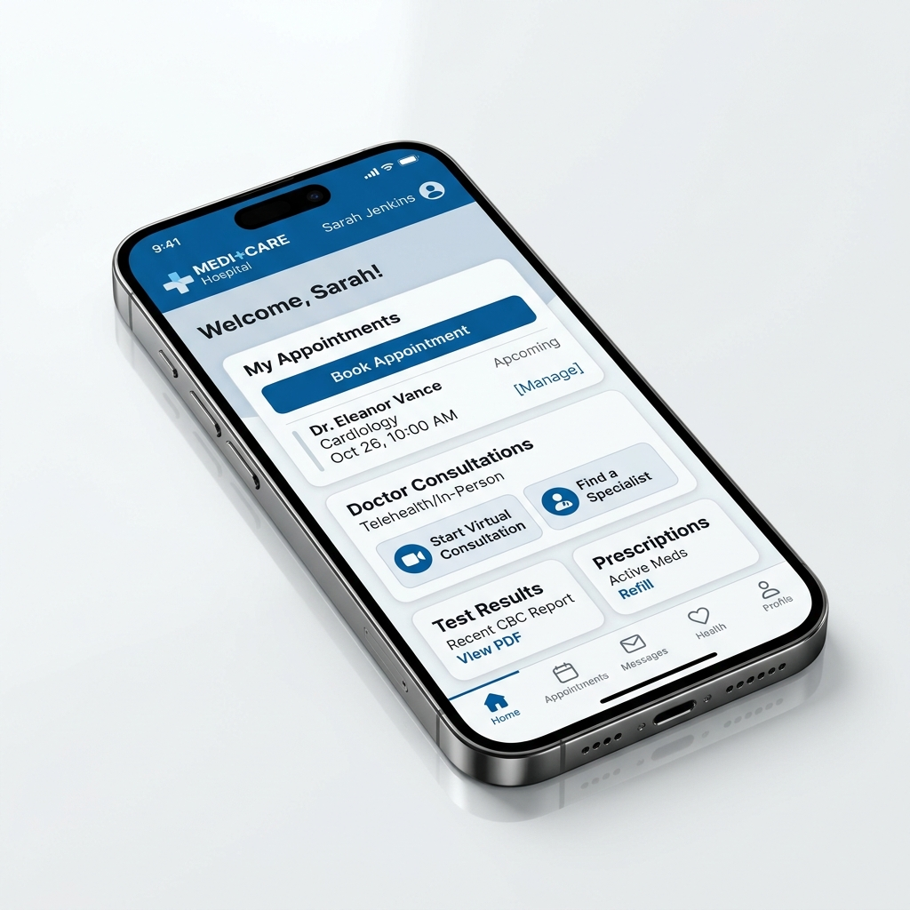
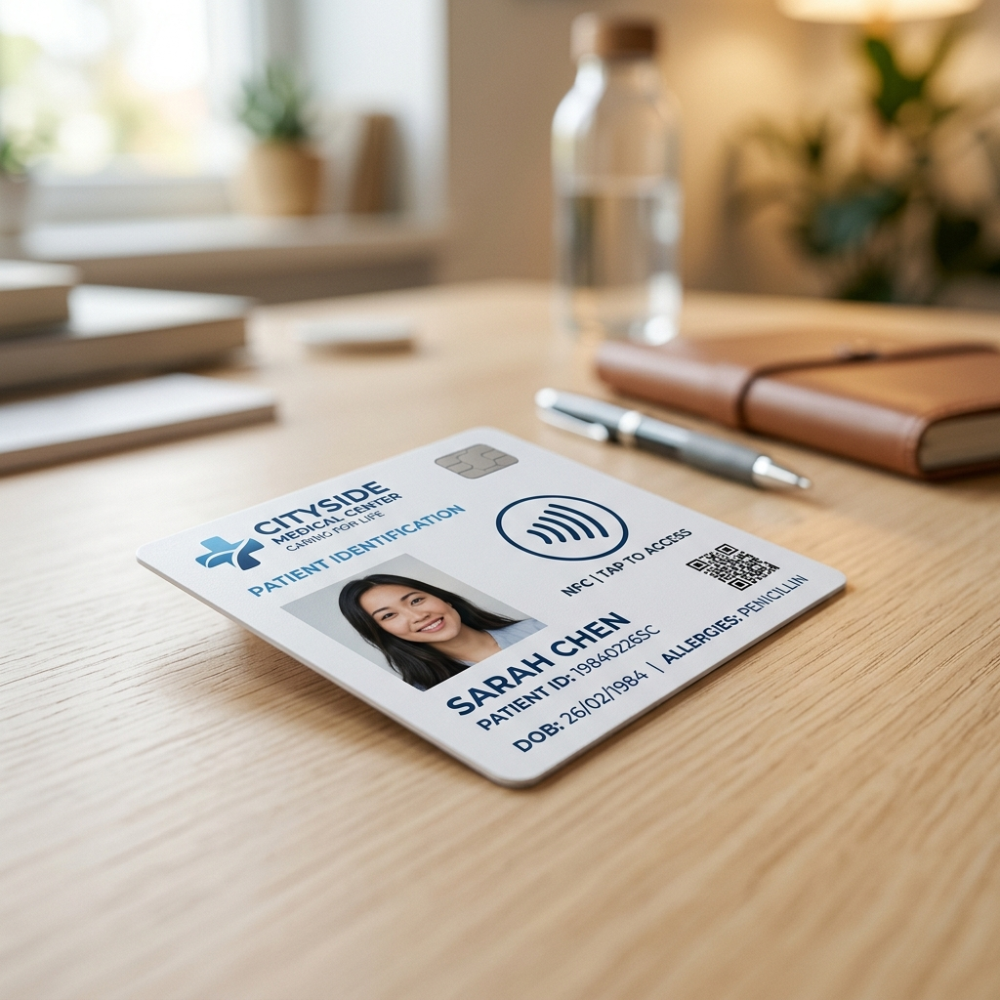

Ashodaya Hospital mengadopsi platform digital komprehensif untuk memastikan alur pelayanan cepat, sistematis, dan bebas hambatan di setiap lini penanganan medis.
Lihat Fitur Utama
Kemudahan administrasi mandiri dari rumah guna meminimalkan waktu tunggu di rumah sakit.
Cari jadwal dokter spesialis, lakukan janji temu, dan dapatkan nomor antrean secara online tanpa perlu antre manual.
Lakukan telekonsultasi jarak jauh (telemedicine) dengan tim medis spesialis kami melalui panggilan video aman.
Pantau ketersediaan ranjang rawat inap (VIP, Kelas 1, 2, 3) secara real-time untuk transparansi dan persiapan.
Tebus resep digital dokter langsung lewat aplikasi, dan obat akan dikirim langsung ke rumah pasien via logistik medis.
Picu panggilan darurat IGD instan beserta pengiriman lokasi GPS pasien untuk respon cepat tim medis darurat.
Selesaikan pembayaran administrasi medis dan tebus resep secara cashless menggunakan integrasi e-wallet dan transfer bank.

Setiap pasien terdaftar mendapatkan kartu fisik berteknologi NFC (Near Field Communication) yang berintegrasi langsung dengan database rekam medis elektronik rumah sakit.
Kami menunjang keandalan medis dengan implementasi Hospital Information System (HIS) dan Enterprise Resource Planning (ERP) di jajaran operasional belakang.